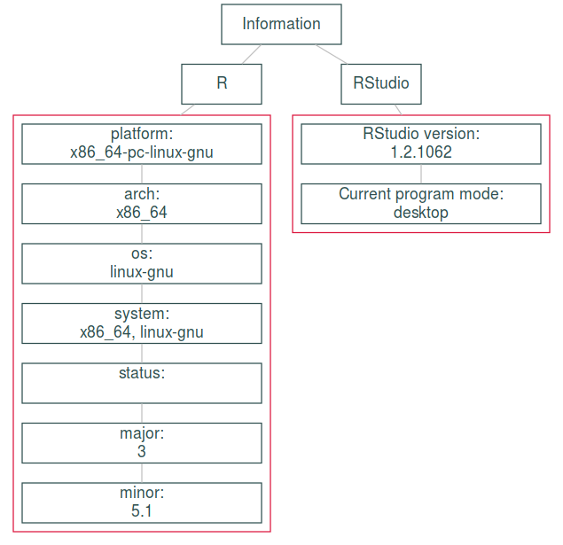

vignettes/using-diagrammer-with-bookdown.Rmd
using-diagrammer-with-bookdown.RmdThis project consists of two repositories:
Our workflow is:
sqlpetr package by sourcing the file install_me.R. This installs the package, all the dependencies needed to work on the package, and all of the dependencies needed to build the book and run the code samples in the book. It also rebuilds the pkgdown site for sqlpetr.sqlpetr. This vignette documents one such function.We maintain the book in two forms - the Bookdown “GitBook” HTML format and as a PDF file. The HTML book is deployed to GitHub Pages at https://smithjd.github.io/sql-pet and the PDF is downloadable from a button at the top of the HTML book.
To create some of the graphics in the book, we use the DiagrammeR package. The remainder of this vignette describes how we use it.
DiagrammeR (Iannone 2018) is a package for creating diagrams with R code. There are essentially two ways to create a diagram:
render_graph.Both of these will work in an R Markdown document that’s deployed to HTML. In fact, they also work in the HTML-based “GitBook” output from Bookdown. And in the first case, there’s no code required except the description of the diagram in the DOT language (http://rich-iannone.github.io/DiagrammeR/graphviz_and_mermaid.html).
For the programmatic workflow, DiagrammeR can export a graph object to image files, which knitr can import into both the HTML and PDF versions of a book. But there’s no easy way to go from the manual text description to image files. So we built one.
grVis object to image filesWhen you create a diagram manually, DiagrammeR returns a grViz object. The actual diagram is coded as a Scalable Vector Graphics (SVG) text string, and the rest of the object is metadata.
When you create a diagram programmatically, render_graph returns a grViz object, given a (computed) graph object in an internal DiagrammeR format. So in either case, we have an htmlwidget object.
Here’s an example (http://rich-iannone.github.io/DiagrammeR/graphviz_and_mermaid.html):
DiagrammeR::grViz("
digraph nicegraph {
# graph, node, and edge definitions
graph [compound = true, nodesep = .5, ranksep = .25,
color = crimson]
node [fontname = Helvetica, fontcolor = darkslategray,
shape = rectangle, fixedsize = true, width = 1,
color = darkslategray]
edge [color = grey, arrowhead = none, arrowtail = none]
# subgraph for R information
subgraph cluster0 {
node [fixedsize = true, width = 3]
'@@1-1' -> '@@1-2' -> '@@1-3' -> '@@1-4'
'@@1-4' -> '@@1-5' -> '@@1-6' -> '@@1-7'
}
# subgraph for RStudio information
subgraph cluster1 {
node [fixedsize = true, width = 3]
'@@2' -> '@@3'
}
Information [width = 1.5]
Information -> R
Information -> RStudio
R -> '@@1-1' [lhead = cluster0]
RStudio -> '@@2' [lhead = cluster1]
}
[1]: paste0(names(R.Version())[1:7], ':\\n ', R.Version()[1:7])
[2]: paste0('RStudio version:\\n ', '1.2.1062')
[3]: paste0('Current program mode:\\n ', 'desktop')
")Since this vignette is HTML, you can see the diagram. But to make both HTML and PDF, we need image files that knitr can import. For that, we’ll need two more packages: DiagrammeRsvg (Iannone (2016)) and magick (Ooms (2018)).
First, create a directory for the images:
dir.create("diagrams", recursive = TRUE)
#> Warning in dir.create("diagrams", recursive = TRUE): 'diagrams' already
#> existsCreate an htmlwidget object from the graph DOT text using DiagrammeR::grViz
widget <- DiagrammeR::grViz("
digraph nicegraph {
# graph, node, and edge definitions
graph [compound = true, nodesep = .5, ranksep = .25,
color = crimson]
node [fontname = Helvetica, fontcolor = darkslategray,
shape = rectangle, fixedsize = true, width = 1,
color = darkslategray]
edge [color = grey, arrowhead = none, arrowtail = none]
# subgraph for R information
subgraph cluster0 {
node [fixedsize = true, width = 3]
'@@1-1' -> '@@1-2' -> '@@1-3' -> '@@1-4'
'@@1-4' -> '@@1-5' -> '@@1-6' -> '@@1-7'
}
# subgraph for RStudio information
subgraph cluster1 {
node [fixedsize = true, width = 3]
'@@2' -> '@@3'
}
Information [width = 1.5]
Information -> R
Information -> RStudio
R -> '@@1-1' [lhead = cluster0]
RStudio -> '@@2' [lhead = cluster1]
}
[1]: paste0(names(R.Version())[1:7], ':\\n ', R.Version()[1:7])
[2]: paste0('RStudio version:\\n ', '1.2.1062')
[3]: paste0('Current program mode:\\n ', 'desktop')
")Extract the SVG code for the diagram and write it to a file:
library(dplyr)
#>
#> Attaching package: 'dplyr'
#> The following objects are masked from 'package:stats':
#>
#> filter, lag
#> The following objects are masked from 'package:base':
#>
#> intersect, setdiff, setequal, union
widget %>%
DiagrammeRsvg::export_svg() %>%
cat(file = "diagrams/example.svg")If you have an SVG viewer, like Inkscape, you can open the file and see the diagram!
Now, create a .png for importing to HTML and a .pdf for importing into PDFs.
That was the hard part - it’s downhill from here. A single knitr call is all we need to get the image displayed in our R Markdown either in an HTML or PDF document.

How does this work? We have both .png and .pdf files for the image. knitr sees the auto_pdf option and makes the choice accordingly. If it’s making an HTML file it uses the .png and if it’s making a PDF file it uses the .pdf.
sqlpetr::sp_make_image_files
#> function (widget, directory, filename)
#> {
#> dir.create(directory, recursive = TRUE, showWarnings = FALSE)
#> svg_name <- paste(directory, paste(filename, "svg", sep = "."),
#> sep = "/")
#> png_name <- paste(directory, paste(filename, "png", sep = "."),
#> sep = "/")
#> pdf_name <- paste(directory, paste(filename, "pdf", sep = "."),
#> sep = "/")
#> widget %>% DiagrammeRsvg::export_svg() %>% cat(file = svg_name)
#> magick::image_read_svg(svg_name) %>% magick::image_write(path = png_name,
#> format = "png")
#> magick::image_read_svg(svg_name) %>% magick::image_write(path = pdf_name,
#> format = "pdf")
#> return(png_name)
#> }
#> <bytecode: 0x55eea2822748>
#> <environment: namespace:sqlpetr>Test it!
Iannone, Richard. 2016. DiagrammeRsvg: Export Diagrammer Graphviz Graphs as Svg. https://CRAN.R-project.org/package=DiagrammeRsvg.
———. 2018. DiagrammeR: Graph/Network Visualization. http://rich-iannone.github.io/DiagrammeR/index.html.
Muni, Dipti, Mary Anne Thygesen, Sophie Yang, Jim Tyhurst, John David Smith, and M. Edward (Ed) Borasky. 2018a. R, Databases and Docker. https://smithjd.github.io/sql-pet.
———. 2018b. Sqlpetr: Companion Package for R-Docker-Databases Book. https://github.com/smithjd/sqlpetr.
Ooms, Jeroen. 2018. Magick: Advanced Graphics and Image-Processing in R. https://CRAN.R-project.org/package=magick.
Xie, Yihui. 2016. Bookdown: Authoring Books and Technical Documents with R Markdown. Boca Raton, Florida: Chapman; Hall/CRC. https://github.com/rstudio/bookdown.